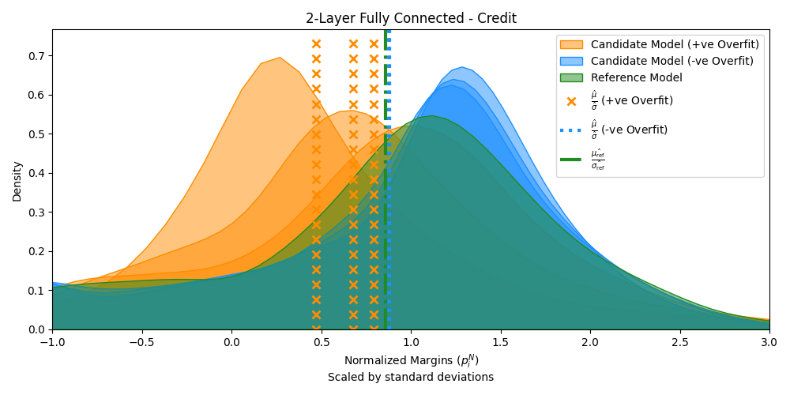
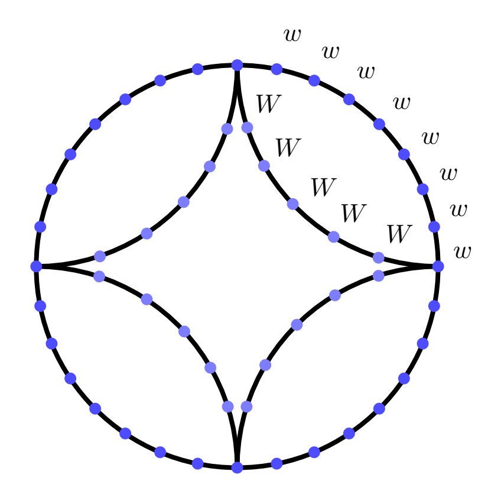
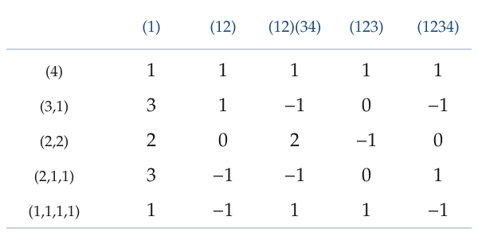

Research
ProoFit
With Samanway Sadhu and Amrita Roy Chowdhury, I worked on ProoFit, a system for auditing overfitting in neural networks while keeping model weights and training data confidential. Our approach uses connections between generalization and model complexity to compare a trained model with a reference model. We combine PyTorch experiments with zero-knowledge proofs to verify the audit computations efficiently.


Token Swapping
With Nicole Wein, I worked on approximation algorithms for weighted token swapping on graphs and trees. The problem asks how to move tokens to their target vertices through swaps along edges while minimizing total cost. For positive token weights, our paper gives approximation algorithms and tight barriers for natural classes of algorithms.

Settling Weighted Token Swapping up to Algorithmic Barriers (2025).
Character tables of symmetric groups
In the Lab of Geometry at Michigan (LoG(M)), I worked with Arnav Shah and Atharva Kulkarni under the mentorship of Sarah Peluse and Karthik Ganapathy on statistics of character tables of symmetric groups.
Our computational work uses the Frobenius formula and the Murnaghan–Nakayama rule to examine character values, the density of zero entries, and congruence patterns in columns indexed by staircase partitions.
